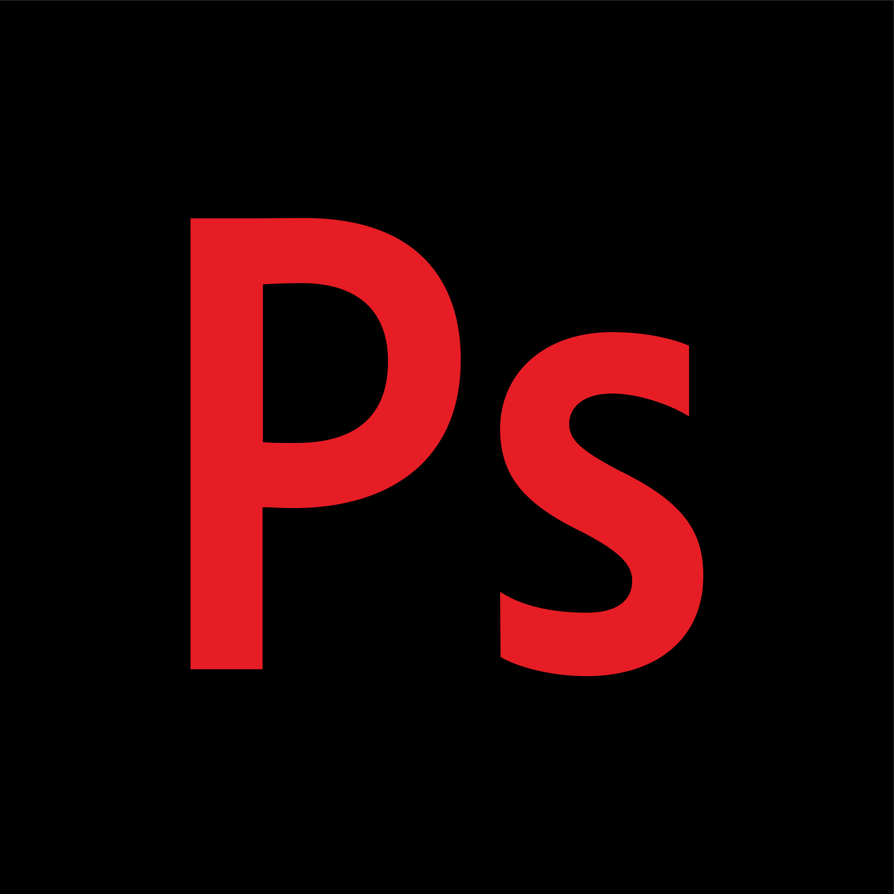
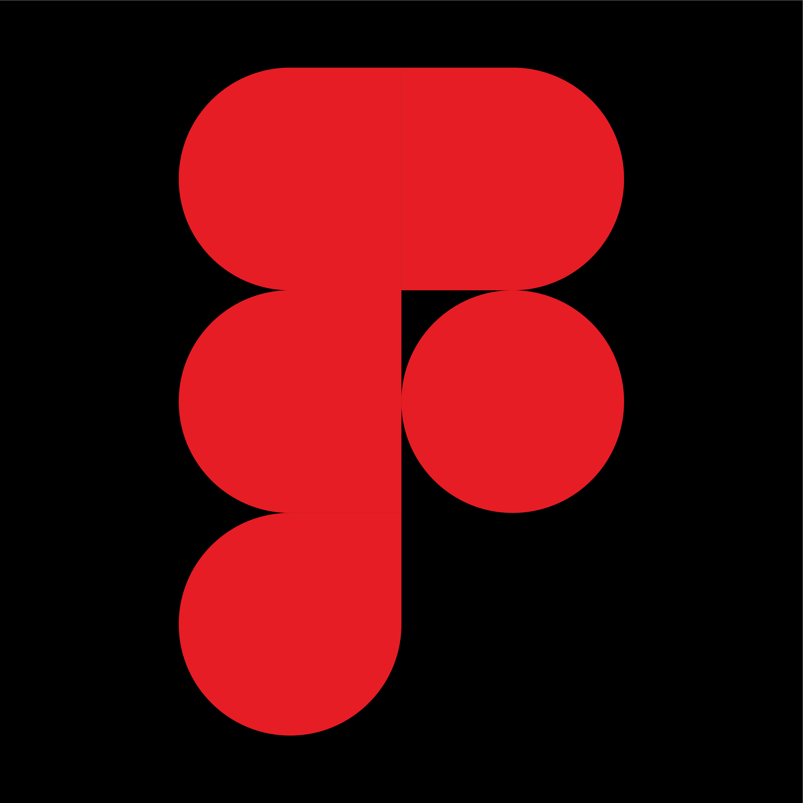
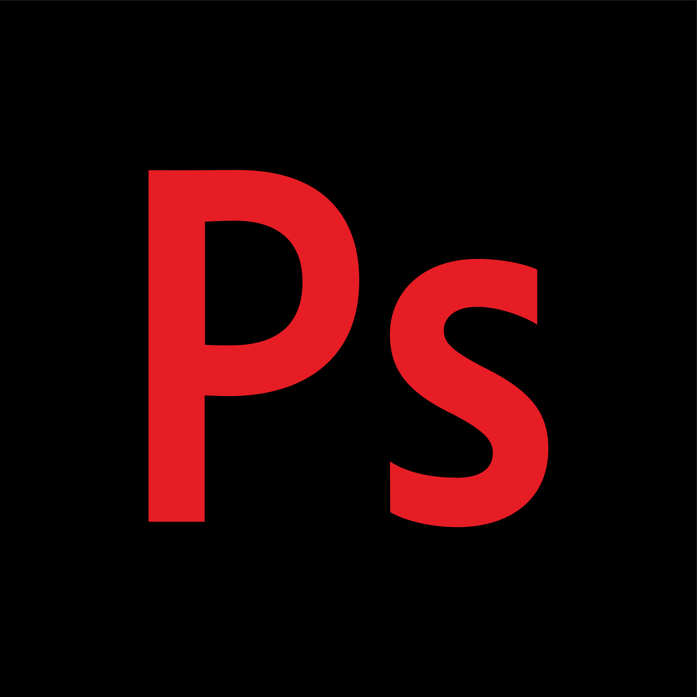
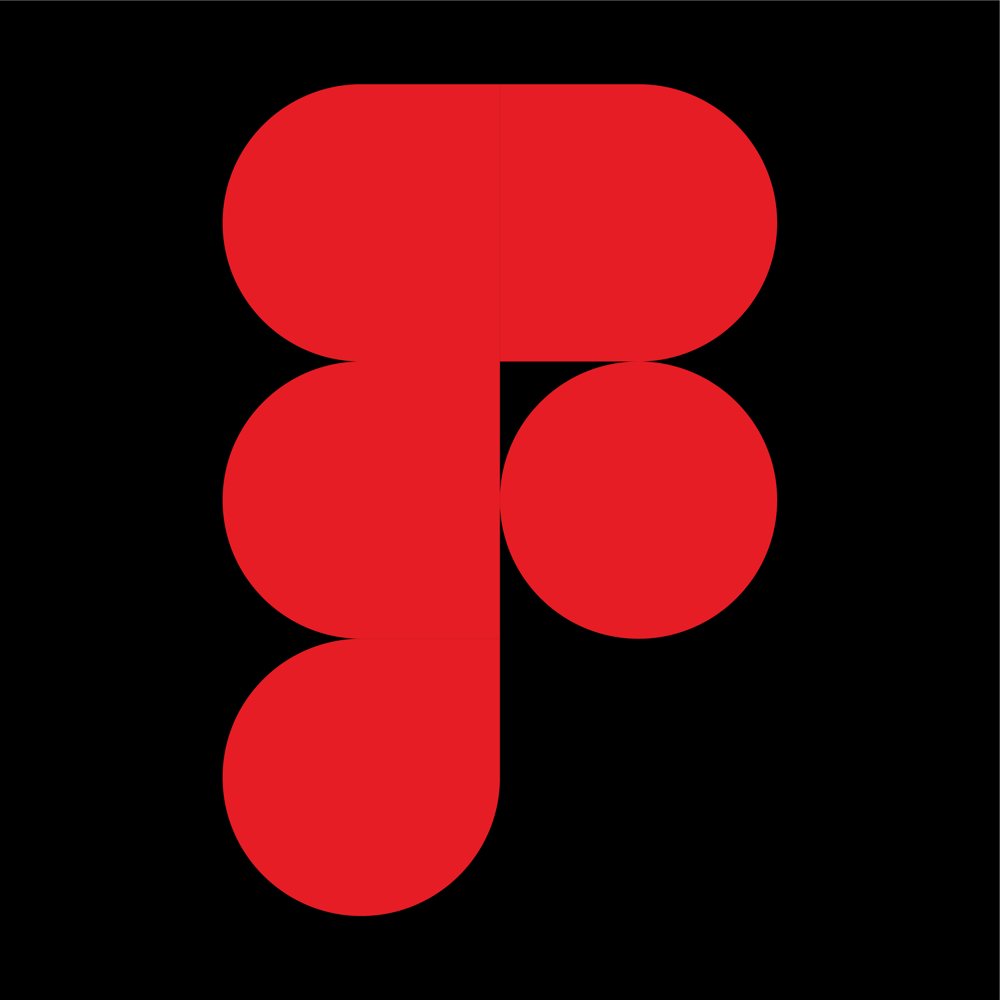
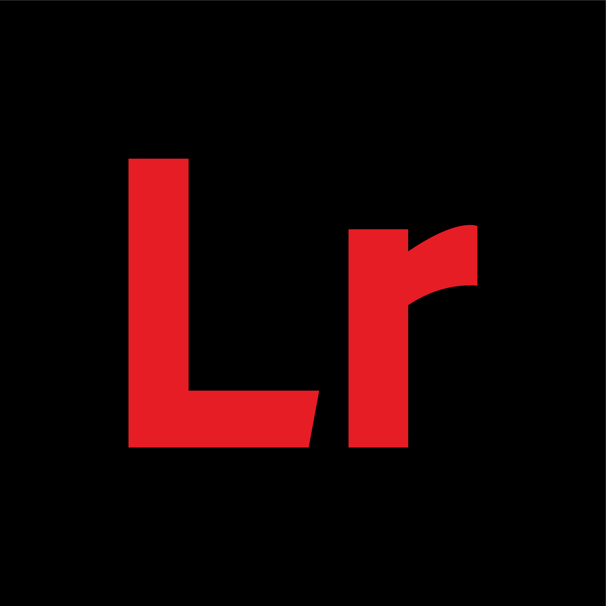
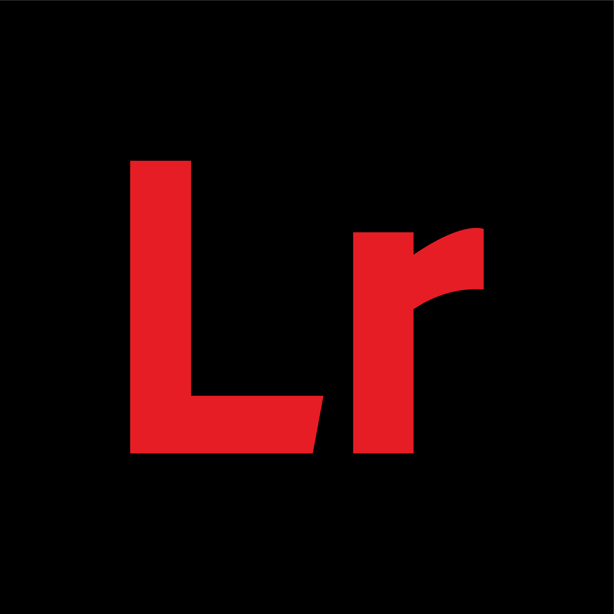

Ik ben Wout, een 19-jarige graphic designer uit Geel.
Met een passie voor visuele communicatie en oog voor detail creëer.
Ik ontwerp designs die zowel esthetisch als functioneel zijn.
Of het nu gaat om logo's, branding, posters of andere grafische ontwerpen, ik bied de creatieve oplossingen
die u of uw bedrijf nodig heeft.
Aarzel niet om contact met mij op te nemen
voor een samenwerking of advies!

Skills
Mijn belangrijkste expertise ligt in grafisch ontwerp en visuele communicatie.
Als student grafisch ontwerp focus ik op branding, typografie en lay-out.
Met tools als Photoshop, Illustrator, InDesign en Figma creëer ik opvallende ontwerpen.
Ik verken ook webdesign en animatie om mijn vaardigheden te versterken en streef naar impactvolle, doordachte creaties.
 



 

Projects
Wat ooit begon als een droom werd werkelijkheid.
Mijn eerste klant als grafisch ontwerper.
Maak kennis met MTS Media, een opstartend bedrijf dat in 2025 zal ontstaan.
Ik heb dit logo voor hun gemaakt, wat perfect aansluit bij de visie van het bedrijf.
De pijl omhoog in de eerste M staat dan ook voor groei.
Het bedrijf specialiseert zich in fotografie, videografie en marketing.
Na de eerste ontmoeting wist ik wat ik ging maken en hier was mijn klant zeer tevreden mee.

Een ontwerp maken voor zowel Logitech, Red Bull als PXL.
Het leek mij altijd onmogelijk tot ik de Red Bull Gaming Hub ontdekte,
een plek van de PXL waar jongeren kunnen gamen voor & na hun lesuren.
Ik ben eigenlijk bij deze organisatie terecht gekomen als ontwerper en merkte al snel
dat dit een kans uit de 1000e was.


Afgelopen semester hebben veel gewerkt rond het thema waarin wij een portfolio hebben
moeten opstellen dit vind je dus in deze folder.